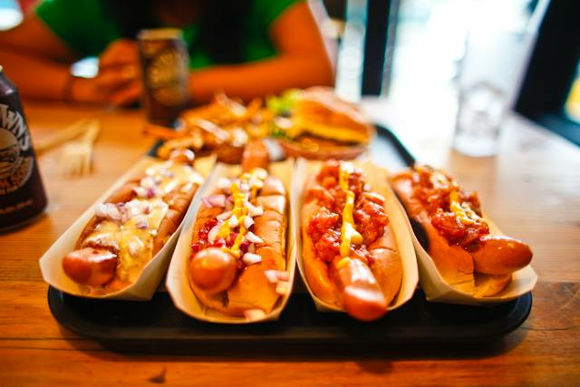

Hpot Dogs

Description
Ramen noodles are japanese rice noodles in a umami broth with added veggies or proteins.
Ingredients
- Hot Dog Style Bun
- Hot Dog
- Mustard
- Onion
- Water
Steps
- Boil the water.
- Add in the hot dogs. Boil roughly 2-3 minutes until heated.
- Add the hotdog to the bun.
- Add a line of mustard.
- Add diced onion on top of the mustard.
- Eat.
Home